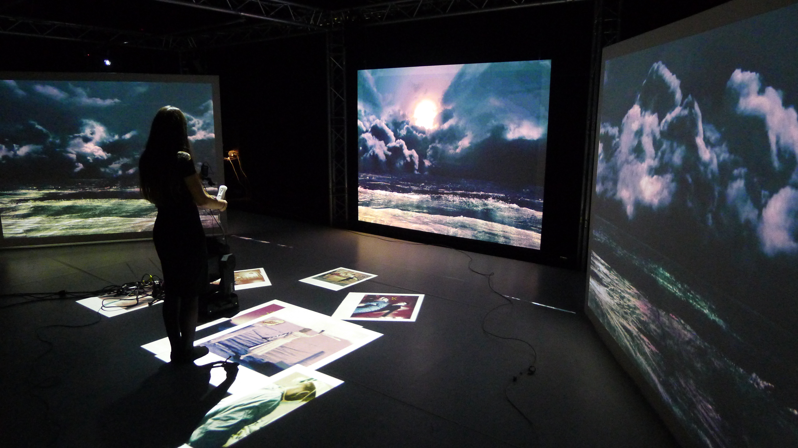

Freaklabs: Joint Artists and Developers Technology Design and Evaluation
Arnaud Loonstra, arnaud@z25.org, Stichting z25.org
01 July 2015
Abstract
Every new technology needs a tryout in practice. Apart from user tests it is often difficult to prepare a new and immature technology for real use cases. To pave the way for a new technology to practical use we have experimented with artists and developers playing with the technology in a controlled lab sessions (Freaklabs). Although this proves difficult to organize the results are invaluable to steer further development of the technology. In this whitepaper we evaluate three Freaklab sessions for the ZOCP technology.
Introduction
The ZOCP technology is a new computer technology which enables artists to easily connect different applications to each other and so create an orchestration of interconnected applications. This is accomplished by a classical programming framework combined with a visual editor to control the interconnections.
The ZOCP technology has emerged from the need to have a more flexible and distributed setup for orchestrating computer technology1. This has resulted in a prototype build with ZeroMQ and Python. The technology was developed to solve the problem of centralized control and processing and manual configured setups. However to steer future development we needed to make sure that:
- the problem is indeed solved by the new technology
- new problems introduced by the new technology are charted
- users can adopt the technology easily
- the new technology is solid and future proof
We’ve found that in the early stages of design and development a very direct communication between the users of the technology and its developers is beneficial. This document describes three sessions which were organized to give the new technology(ZOCP) a testbed with its users and developers involved.
Methods
We have hypothesized that specific tests or user tests of the technology is not enough to assure optimal development. Specific tests are usually constructed from a technological perspective, however in a young technology even the design of the technology might need testing. The technology perspective towards a solution can be very different from a user’s perspective. Therefore we think that the best approach to test user acceptance of a technology and evaluate its design is to create a situation where developers and users work together. As the ZOCP technology is aimed at being used in an artistic context we have organized sessions (Freaklabs) in which artists and developers together play with setups using the new technology.
Apart from creating a playground for the technology these Freaklabs are without specific goals. By doing so a setting is created for all participants to objectively perceive the technology. In the Freaklab it is, for example, very valuable to fail while trying something. There is much more to learn from a failed attempt than from a successful one.
This document is written as a reflection on the first three organized labs. All Freaklabs were held at the Media and Performance Lab (MAPLAB) of the HKU University of the Arts Utrecht, The Netherlands. The first Freaklab was held at June 4 until June 6 2014. This first session was aimed at introducing the prototype to the artists and give the prototype an initial stress test. The second Freaklab was held from October 7 until October 10 2014 and was aimed at using the prototype to orchestrate a mixed reality setup. The third Freaklab was held from May 23 until May 24. This session was aimed at controlling multiple videoplayers and test whether the API was acceptable to artists.
Results
The first lab gave the ZOCP prototype an initial stress test while being used on Linux, OSX and Windows platforms. This lab was especially useful to explain ZOCP concepts and usage to artists. This proved to be quite challenging as the translation from a conceptual model to the users mental model is a very delicate subject234. This can be best explained in terms of the difference between the familiar sequential programming paradigm to an asynchronous paradigm. The best approach seemed to be providing very simple use cases and discussing the problems of specific solutions artists came up with. Combining this with a solid theoretical conceptual model of the technology enabled the artists to mentally understand how the technology works. Even days after the Freaklab there was still discussion about how to utilize the ZOCP technology which illustrates the process of forming a mental model from the taught concepts.

As practice makes perfect the second lab was aimed at continuing to use the ZOCP technology. Often a new technology does not serve as a drop-in replacement for an existing technology. In our case a lot of systems are using the OSC protocol. The second Freaklab was therefore trying to combine the ZOCP technology with existing OSC applications. In addition the lab session was looking into combining a physical realm with a virtual realm and introducing interaction. This was done by trying to match projected virtual spaces with the physical space and using legacy applications to provide interaction.
The second lab showed that matching different realities is a very precise job. When no system provides a clear structure for describing a coordinate space you easily end up calculating a conversion for every space each time. This has resulted in a new research about the coordinate models for different spaces.
Blender was used as a tool to operate and control all the virtual realities. The ZOCP technology was therefore integrated in Blender. This enabled the artists to utilize ZOCP much better as the Blender tool is closer to an artistic practice than programming in a text editor.
As this Freaklab was more focused on creating a setup with ZOCP as well as legacy applications, ZOCP received less feedback. However the general feedback from the artists proved invaluable for new developments of ZOCP, hence the new research into mapping coordinate models. The session also showed the different practices of legacy application and newer ZOCP based applications. In general the setups create chains of program communications which require a lot of management. This management is exactly what ZOCP aims to ease as legacy (OSC) applications do not have such mechanisms.
The artistic context which was created in the lab consisted of a interactive story called “Sea of Glass”. The story was about a fictional character with a porcelain heart. This story was experienced by interacting a moving head with a pico projector attached to it. The moving head was able to be controlled by using a Wii controller or a tablet and acted as a search light in a panoramic sea environment. It is as if the participant is standing in a lighthouse searching for objects/memories through which the story unfolds. (Illustration 2)

The third Freaklab was aimed at using the new signals implementation of ZOCP5. Signals should enable the artists easier exchange of data between nodes of ZOCP. This lab session was preceded by a ZOCP workshop on the 4th of May. The workshop was done to introduce new artists and developers to ZOCP and to refresh the knowledge of those already familiar with ZOCP. This workshop proved to be very important to practice teaching the concepts of ZOCP but also to feed discussion about the concepts. These discussions were very fertile for everybody’s mental model of ZOCP. We have noticed this is a repeating subject when introducing the programming model of ZOCP.
After the workshop developers and artists started making simple applications using ZOCP6. The 3rd session was also fed with an artistic context based on the play “No Exit” by Sartre7 provided by Wijnand Veneberg and Erico Becker. A remediation of the play as a modern interpretation of the underground was created. Participants are immersed in the play in a setting in which six people sit in a circle with a vertical screen in front of each of them. The screens act as gateways to the underworld so the participants gaze into each other’s underworld. All of them have a room on their screen, of which three are represented with the three characters. In this way the participants become the characters. The other three screens contained visual animated representations with background information of the three characters.

Initially a physical setup of 6 screens was build using the available hardware. These 6 screen were all controlled by Raspberry Pi machines running a simple ZOCP controlled videoplayer.
Before playing with the ZOCP apps commenced some developers presented new apps which were developed after the workshop. This was also an introduction to ZOCP for artists that were new to ZOCP.

After these presentations the artists started playing with constructs of ZOCP apps to trigger different actions. Drumcomputers were used to control videos on the screen. Lights were controlled using DMX and ZOCP. Midi controllers were used to trigger events.
The third Freaklab was the first time artists were able to fully create setups using ZOCP without having to develop specific apps. This resulted in discussions about how to create setups using ZOCP apps which is exactly the discussion we wanted for feedback of ZOCP development. For example a discussion emerged about how to create inputs for the ZOCP apps in the form of event triggers and whether certain logic should reside at the output end or at the input end.
The role of the node editor became very apparent as a way to connect different nodes of different people and keep an overview of what was happening. This also showed a bias towards nodal logic. Some artists were thinking about ZOCP in terms of programming logic by visual nodes (ie. PureData, Max/MSP, VVVV) as opposed to orchestrating multiple programs running on computers.
The limitations of the current prototype were also shown by ZOCP apps which were developed to workaround certain missing features. For example when two ZOCP nodes exchange incompatible data a translation needs te be made. A ZOCP app was developed to provide this feature however in the design of ZOCP this is provided by applying logic on the signal subscriptions. This is currently not implemented yet hence the workaround provided by a ZOCP app.
The API of the prototype was also discussed as being too cumbersome. Users don’t want to deal with the internals of ZOCP and the API should provide for that. In the current prototype one needs to access data by pointing into a nested datastructure. A new incarnation of ZOCP should hide the internals and let users only deal with their own data.
Conclusion
The Freaklabs have proven to be very useful for steering development and testing user adoption. By bringing development and usage close to each other they influence each other naturally. Users need to develop a mental model based on the concepts provided by the new technology. Developers need to understand how these mental models are formed by the user so they can adept the technology to cater for this optimally. By letting developers and users discuss directly they seem to relate to each other better. The developer starts talking in terms of the user and the user starts talking in terms of the developer.
As a developers needs to create or enhance something he/she needs to zoom into a specific parts of the process of a program. This needs dedication and concentration. For a user this looks like a very introvert process and can seem intimidating. Hours can go by without any visible progress. In the Freaklabs we have witnessed this often, especially in the early days of the prototype. In general one would want to avoid these situations by making sure some functionality exists before commencing a Freaklab. On the other hand it is sometimes unavoidable. The Freaklabs need to be organized around this. A certain balance needs to be found.
What proved very productive is to not have a specific goal. This enabled everybody to have a saying in the process. There is a delicate equilibrium of trying out technical aspects of ZOCP and being able to play with the technology without being limited by technical aspects. By just providing a playfield with some artistic context to support the fun of playing we’ve found the emerged discussions to be very helpful for all parties. These discussions are the essence of the Freaklabs as technology only has a value in the context of its users. To develop for this the users and developers need to talk on a same level.
Every new technology requires a new mental effort of its adopting users. We’ve found to repeat the concepts of the technology and to discuss them openly supports users as they form a workable mental model. This process also contributes to developers understanding how users can adopt the technology.
Having users play with the technology and have developers join seems a very natural way to acquire feedback on the technology and to estimate its state. However we’ve found that it takes an effort to facilitate this process as users and developers often talk a very different language and have very different practices. The artistic context is able to provide a common ground for discussion in any terms. The Freaklabs we have organized have been very productive however they are also a luxury. A Freaklab requires effort and time from both users and developers without having a goal other than discover the new technology.
References
- 1 A. Loonstra, “Orchestrating computer systems, a research into a new protocol”, FOSDEM 2015 conference, Brussels, 01-Feb-2015. [Online]. Available: https://fosdem.org/2015/schedule/event/deviot02/. [Accessed: 08-Apr-2015].
- 2 I. M. Greca and M. A. Moreira, “Mental models, conceptual models, and modelling”, Int. J. Sci. Educ., vol. 22, no. 1, pp. 1–11, Jan. 2000.
- 3 A. Robins, J. Rountree, and N. Rountree, “Learning and Teaching Programming: A Review and Discussion”, Comput. Sci. Educ., vol. 13, no. 2, pp. 137–172, Jun. 2003.
- 4 S. Bhuiyan, J. E. Greer, and G. I. McCalla, “Learning recursion through the use of a mental model-based programming environment”, in Intelligent Tutoring Systems, C. Frasson, G. Gauthier, and G. I. McCalla, Eds. Springer Berlin Heidelberg, 1992, pp. 50–57.
- 5 A. Hoeben, “Implementation of Signals”, GitHub. [Online]. Available: https://github.com/z25/pyZOCP. [Accessed: 01-Jun-2015].
- 6 “Collection of ZOCP applications”, GitHub. [Online]. Available: https://github.com/z25/ZOCPApps. [Accessed: 01-Jun-2015].
- 7 GradeSaver, “No Exit Study Guide | GradeSaver”. [Online]. Available: http://www.gradesaver.com/no-exit. [Accessed: 28-May-2015].
Acknowledgements
We thank the MAPLAB, z25.org Foundation and all participants for enabling the Freaklab sessions.
This paper is published online: http://www.z25.org/?page=randd